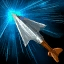
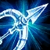

Vayne's Skillset
Q: Tumble
Vayne tumbles, maneuvering to carefully place her next shot. Her next attack deals bonus damage. Rolls a short distance. The next basic attack within 6 seconds deals 30/35/40/45/50% Attack Damage bonus physical damage, equal to 30/35/40/45/50% of total Attack Damage.

W: Silver Bolts
Vayne tips her bolts with a rare metal, toxic to evil things. The third consecutive attack or ability against the same target deals a percentage of the target's maximum Health as bonus true damage. Every third consecutive attack or ability against an enemy deals an additional 20/30/40/50/60 plus 4/5/6/7/8% of the enemy's maximum Health as true damage.(Max: 200 damage vs. Monsters)

E: Condemn
Vayne draws a heavy crossbow from her back, and fires a huge bolt at her target, knocking them back and dealing damage. If they collide with terrain, they are impaled, dealing bonus damage and stunning them. Fires a bolt that knocks back target enemy and deals 45/80/115/150/185 (+50% bonus Attack Damage) physical damage. Enemies that collide with terrain take 45/80/115/150/185 (+50% bonus Attack Damage) additional physical damage and are stunned for 1.5 seconds.
R: Final Hour
Readying herself for an epic confrontation, Vayne gains increased Attack Damage, invisibility during Tumble, and triple the bonus Movement Speed from Night Hunter. Gains 30/50/70 Bonus Attack Damage for 8/10/12 seconds. While active, Tumble grants invisibility for 1 second, and Night Hunter's bonus Movement Speed is increased to 90.

Passive: Night Hunter
Vayne ruthlessly hunts evil-doers. She gains 30 Movement Speed when moving toward nearby enemy champions.